✦ WORKS ✦
Spotlight Work: Cafe in the Clouds
✦ cafe-nemo.itch.io/cafe-in-the-clouds ✦
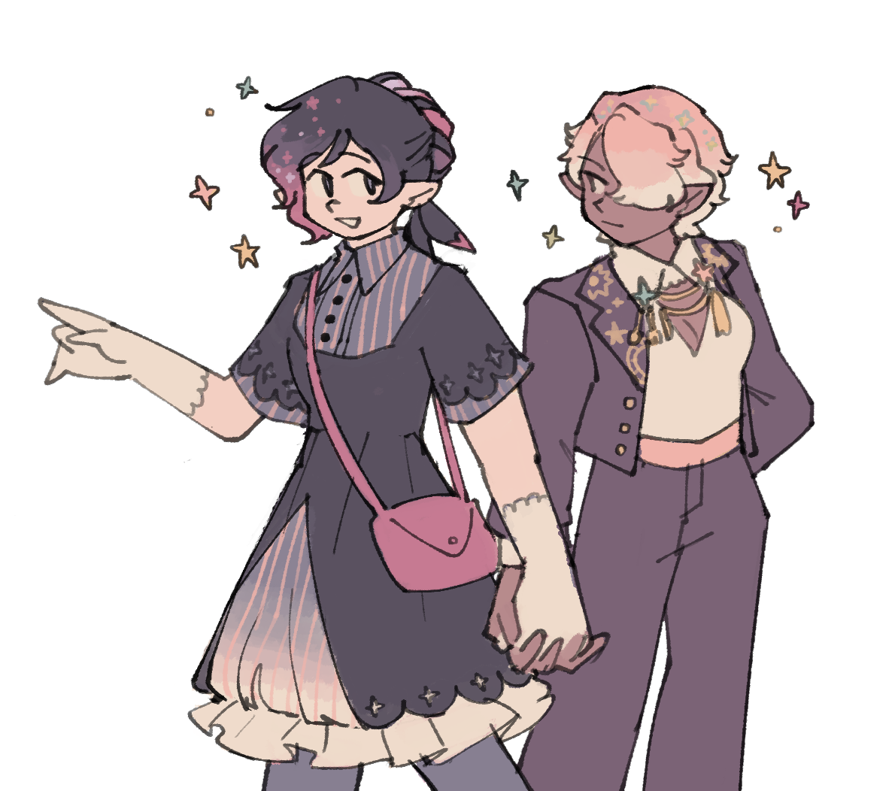
Cafe in the Clouds is a visual novel made in RenPy Engine for NaNoRenO 2020. It features point-and-click puzzles, soft visuals, and WLW leads!
As part of a team of 3, I drew character art and concepts, UI art and design, and helped develop the game and story concepts. Please check out the rest of the team as well!
Cafe in the Clouds won the Visual Arts Award in the 2020 UCSC Games Showcase.
 ▲ i truly had a blast working on citc! it's closest to working on a dream (heh) game, except it was just the three of us and we had a 1 month time limit. i did all non-background art assets, while cynthia and tina were doing major heavy lifting with the code and everything. o(￣┰￣*)ゞ but we all brainstormed visual and story concepts. it's amazing how it all came together.
▲ i truly had a blast working on citc! it's closest to working on a dream (heh) game, except it was just the three of us and we had a 1 month time limit. i did all non-background art assets, while cynthia and tina were doing major heavy lifting with the code and everything. o(￣┰￣*)ゞ but we all brainstormed visual and story concepts. it's amazing how it all came together.
i'm glad i got to draw so much of somnia and remerie! they are Girlfriends
▼ (2 images) Art from the title screens in Cafe in the Clouds. I drew the foreground art while Cynthia drew the background art.
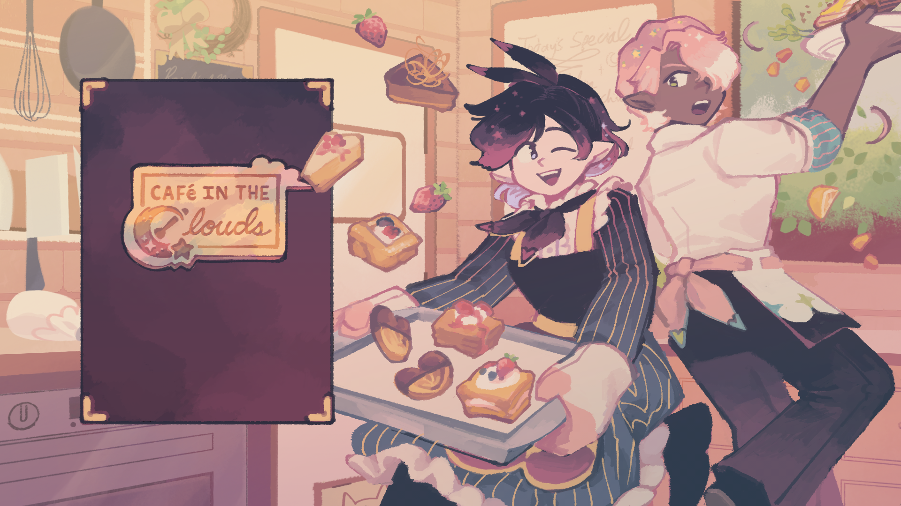
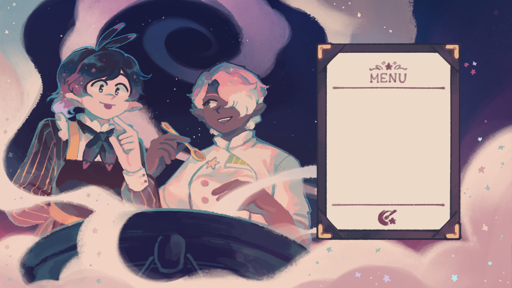
▲ when you click on the menu in the first image, it slides over and changes the entire background to the second image. the food and mist on the respective screens are also animated to gently float! this is all thanks to tina and cynthia's genius!!!
also, i enjoyed drawing remerie's backside. the in-game sprite is forward facing, so you usually don't get to see her cute apron bow.
▼ (2 images) The very first concept art of the two leads, and various concept art for characterization, general UI, cooking UI, title screens, and dream background layout.
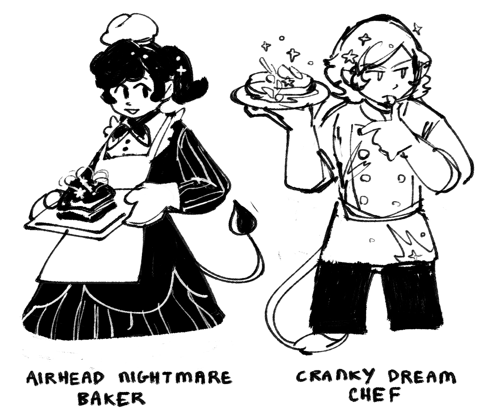
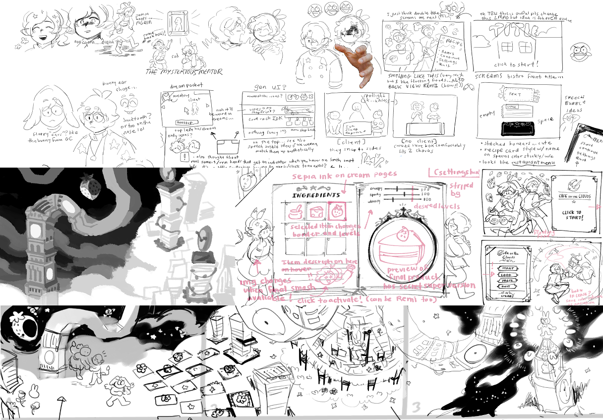
▲ somehow we arrived at "dream-eating baku bakers" during the initial brainstorm session, and we collectively jumped on this idea. there were many fun brainstorming sessions for every bit of the game, from the character designs to the UI to the gameplay flow during the game's different phases. it feels like i'm looking at baby pictures.
▼ (2 images) Various UI elements and select sprites of the main characters.
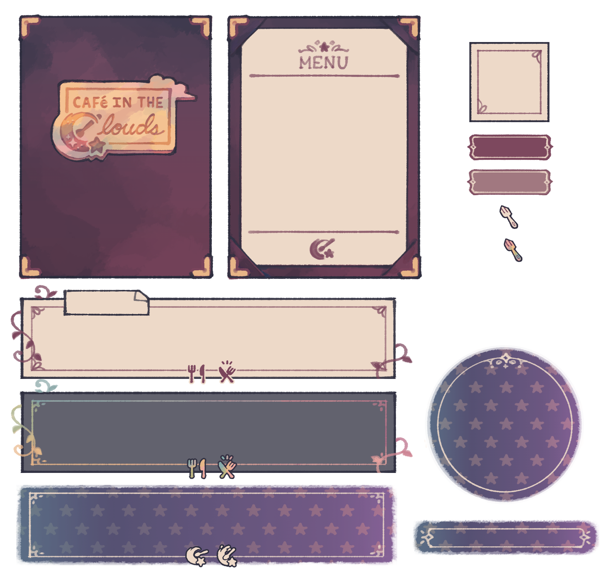
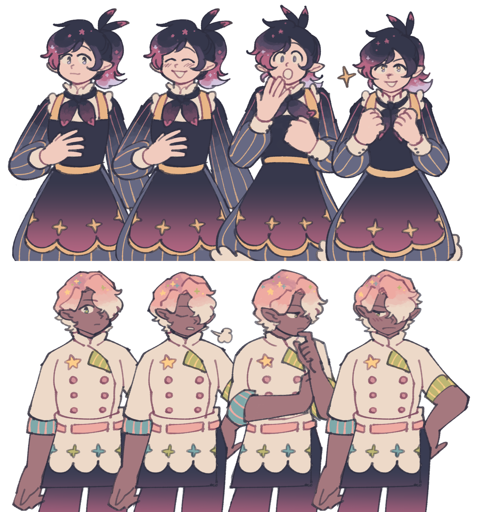
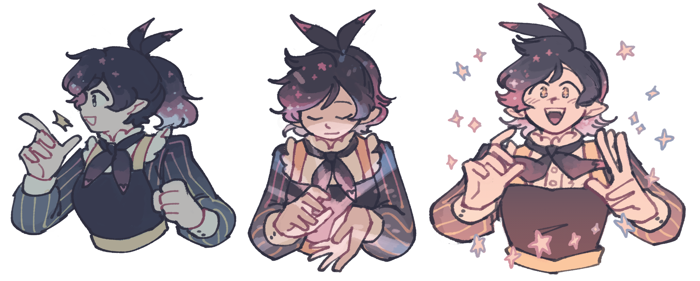
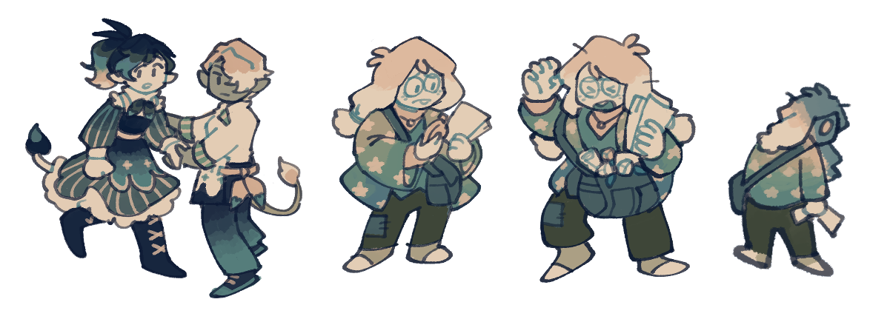
▲ the teal sprites are for the incredible dream sequence. please play the game to see this gameplay in action! it's the heart of the game, with tina programming this whole section for a fantastic gameplay experience and cynthia's otherworldly background and object art. my tiny sprites can't do it justice!
▼ (2 images) Cookbook-based UI for the cooking gameplay portion.
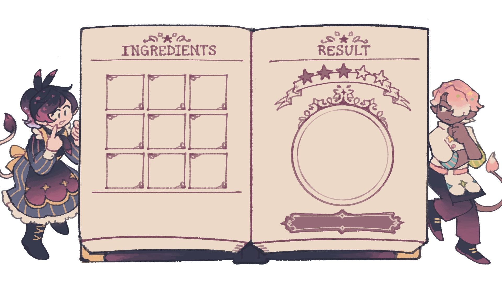
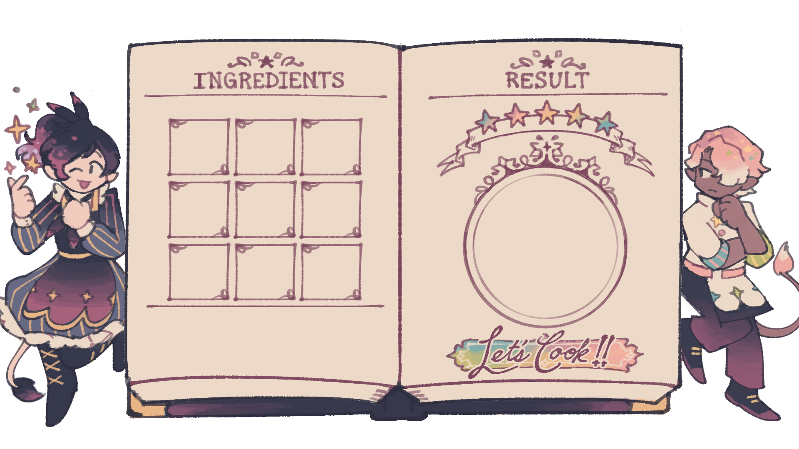
▲ i'm thankful to cynthia and tina for indulging me and letting my cookbook idea become a reality. there's still some gameplay tweaks to be made with the cooking section, but we shall see what the future brings first...
▼ Ending splash screen!
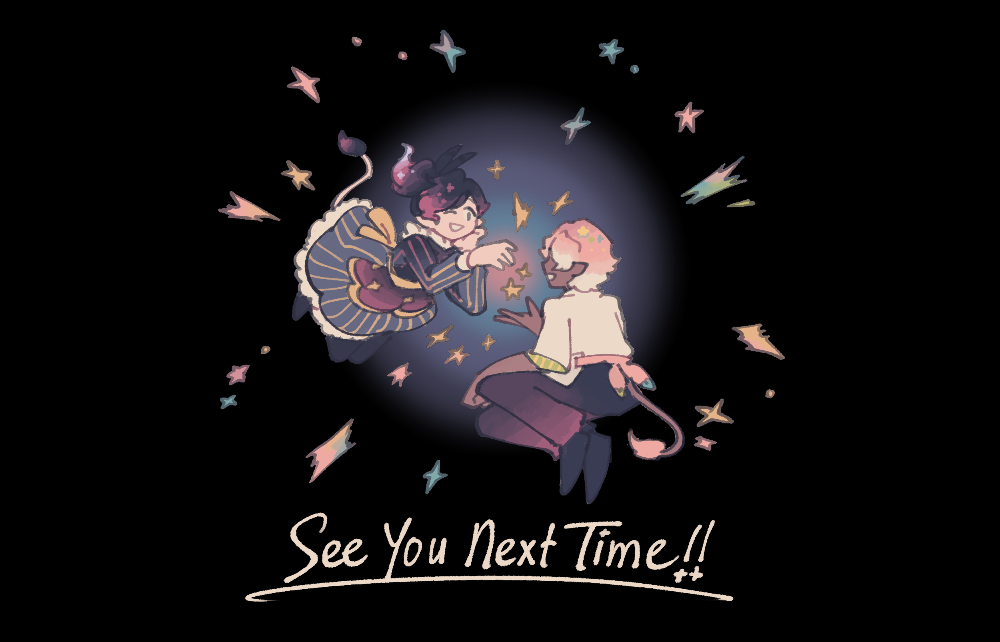